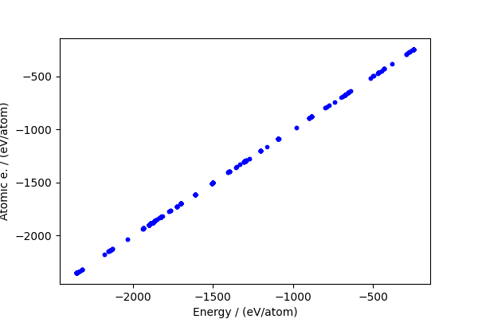
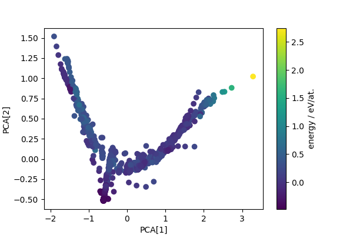
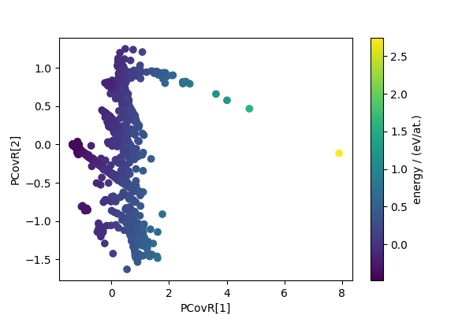

Note
Go to the end to download the full example code
PCA/PCovR Visualization for the rattled GaAs training dataset#
- Authors:
Michele Ceriotti @ceriottm, Giulio Imbalzano
This example uses rascaline and metatensor to compute
structural properties for the structures in a training for a ML model.
These are then used with simple dimensionality reduction algorithms
(implemented in sklearn and skmatter) to obtain a simplified
description of the dataset, that is then visualized using
chemiscope.
import os
import ase
import ase.io
import chemiscope
import numpy as np
import requests
from matplotlib import pyplot as plt
from metatensor import mean_over_samples
from rascaline import AtomicComposition, SoapPowerSpectrum
from sklearn.decomposition import PCA
from sklearn.linear_model import RidgeCV
from skmatter.decomposition import PCovR
from skmatter.preprocessing import StandardFlexibleScaler
First, we load the structures, extracting some of the properties for more convenient manipulation. These are \(\mathrm{Ga}_x\mathrm{As}_{1-x}\) structures used in Imbalzano & Ceriotti (2021) to train a ML potential to describe the full composition range.
filename = "gaas_training.xyz"
if not os.path.exists(filename):
url = f"https://zenodo.org/records/10566825/files/{filename}"
response = requests.get(url)
response.raise_for_status()
with open(filename, "wb") as f:
f.write(response.content)
structures = ase.io.read(filename, ":")
energy = np.array([f.info["energy"] for f in structures])
natoms = np.array([len(f) for f in structures])
Remove atomic energy baseline#
Energies from an electronic structure calculation contain a very large “self” contributions from the atoms, which can obscure the important differences in cohesive energies between structures. We can build an approximate model based on the chemical nature of the atoms, \(a_i\)
where \(e_a\) are atomic energies that can be determined by linear regression.
# rascaline has an `AtomicComposition` calculator that streamlines
# this (simple) calculation
calculator = AtomicComposition(**{"per_structure": True})
rho0 = calculator.compute(structures)
# the descriptors are returned as a `TensorMap` object, that contains
# the composition data in a sparse storage format
rho0
# for easier manipulation, we extract the features as a dense vector
# of composition weights
comp_feats = rho0.keys_to_properties(["species_center"]).block(0).values
# a one-liner to fit a linear model and compute "dressed energies"
atom_energy = (
RidgeCV(alphas=np.geomspace(1e-8, 1e2, 20))
.fit(comp_feats, energy)
.predict(comp_feats)
)
cohesive_peratom = (energy - atom_energy) / natoms
The baseline makes up a large fraction of the total energy, but actually the residual (which is the part that matters) is still large.
fig, ax = plt.subplots(1, 1, figsize=(6, 4))
ax.plot(energy / natoms, atom_energy / natoms, "b.")
ax.set_xlabel("Energy / (eV/atom)")
ax.set_ylabel("Atomic e. / (eV/atom)")
print(f"RMSE / (eV/atom): {np.sqrt(np.mean((cohesive_peratom)**2))}")

RMSE / (eV/atom): 0.25095652580859984
Compute structural descriptors#
In order to visualize the structures as a low-dimensional map, we start
by computing suitable ML descriptors. Here we have used rascaline to
evaluate average SOAP features for the structures.
# hypers for evaluating rascaline features
hypers = {
"cutoff": 4.5,
"max_radial": 6,
"max_angular": 4,
"atomic_gaussian_width": 0.3,
"cutoff_function": {"ShiftedCosine": {"width": 0.5}},
"radial_basis": {"Gto": {"accuracy": 1e-6}},
"center_atom_weight": 1.0,
}
calculator = SoapPowerSpectrum(**hypers)
rho2i = calculator.compute(structures)
# neighbor types go to the keys for sparsity (this way one can
# compute a heterogeneous dataset without having blocks of zeros)
rho2i = rho2i.keys_to_samples(["species_center"]).keys_to_properties(
["species_neighbor_1", "species_neighbor_2"]
)
# computes structure-level descriptors and then extracts
# the features as a dense array
rho2i_structure = mean_over_samples(rho2i, sample_names=["center", "species_center"])
rho2i = None # releases memory
features = rho2i_structure.block(0).values
We standardize (per atom) energy and features (computed as a mean over atomic environments) so that they can be combined on the same footings.
sf_energy = StandardFlexibleScaler().fit_transform(cohesive_peratom.reshape(-1, 1))
sf_feats = StandardFlexibleScaler().fit_transform(features)
PCA and PCovR projection#
Computes PCA projection to generate low-dimensional descriptors that reflect structural diversity. Any other dimensionality reduction scheme could be used in a similar fashion.
We also compute the principal covariate regression (PCovR) descriptors, that reduce dimensionality while combining a variance preserving criterion with the requirement that the low-dimensional features are capable of estimating a target quantity (here, the energy).
# PCA
pca = PCA(n_components=4)
pca_features = pca.fit_transform(sf_feats)
fig, ax = plt.subplots(1, 1, figsize=(6, 4))
scatter = ax.scatter(pca_features[:, 0], pca_features[:, 1], c=cohesive_peratom)
ax.set_xlabel("PCA[1]")
ax.set_ylabel("PCA[2]")
cbar = fig.colorbar(scatter, ax=ax)
cbar.set_label("energy / eV/at.")
# computes PCovR map
pcovr = PCovR(n_components=4)
pcovr_features = pcovr.fit_transform(sf_feats, sf_energy)
fig, ax = plt.subplots(1, 1, figsize=(6, 4))
scatter = ax.scatter(pcovr_features[:, 0], pcovr_features[:, 1], c=cohesive_peratom)
ax.set_xlabel("PCovR[1]")
ax.set_ylabel("PCovR[2]")
cbar = fig.colorbar(scatter, ax=ax)
cbar.set_label("energy / (eV/at.)")


Chemiscope visualization#
Visualizes the structure-property map using a chemiscope widget (and generates a .json file that can be viewed on chemiscope.org).
# extracts force data (adding considerably to the dataset size...)
force_vectors = chemiscope.ase_vectors_to_arrows(structures, scale=1)
force_vectors["parameters"]["global"]["color"] = 0x505050
# adds properties to the ASE frames
for i, f in enumerate(structures):
for j in range(len(pca_features[i])):
f.info["pca_" + str(j + 1)] = pca_features[i, j]
for i, f in enumerate(structures):
for j in range(len(pcovr_features[i])):
f.info["pcovr_" + str(j + 1)] = pcovr_features[i, j]
for i, f in enumerate(structures):
f.info["cohesive_energy"] = cohesive_peratom[i]
f.info["x_ga"] = comp_feats[i, 0] / comp_feats[i].sum()
# it would also be easy to add the properties manually, this is just a dictionary
structure_properties = chemiscope.extract_properties(structures)
cs = chemiscope.show(
frames=structures,
properties=structure_properties,
shapes={"forces": force_vectors},
# the settings are a tad verbose, but give full control over the visualization
settings={
"map": {
"x": {"property": "pcovr_1"},
"y": {"property": "pcovr_2"},
"color": {"property": "x_ga"},
},
"structure": [
{
"bonds": True,
"unitCell": True,
"shape": ["forces"],
"keepOrientation": False,
}
],
},
meta={
"name": "GaAs training data",
"description": """
A collection of Ga(x)As(1-x) structures to train a MLIP,
including force and energy data.
""",
"authors": ["Giulio Imbalzano", "Michele Ceriotti"],
"references": [
"""
G. Imbalzano and M. Ceriotti, 'Modeling the Ga/As binary system across
temperatures and compositions from first principles,'
Phys. Rev. Materials 5(6), 063804 (2021).
""",
"Original dataset: https://archive.materialscloud.org/record/2021.226",
],
},
)
# shows chemiscope if run in a jupyter environment
if chemiscope.jupyter._is_running_in_notebook():
from IPython.display import display
display(cs)
else:
cs.save("gaas_map.chemiscope.json.gz")
/home/runner/work/software-cookbook/software-cookbook/.nox/gaas-map/lib/python3.11/site-packages/chemiscope/jupyter.py:245: UserWarning: chemiscope.show only works inside a jupyter notebook
warnings.warn("chemiscope.show only works inside a jupyter notebook")
Total running time of the script: (1 minutes 10.506 seconds)